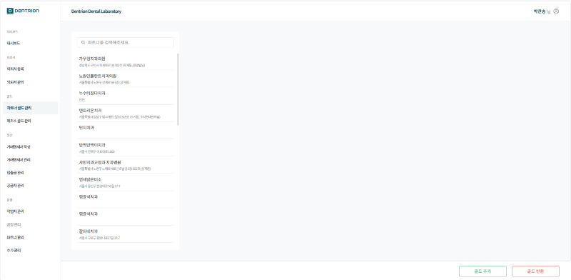
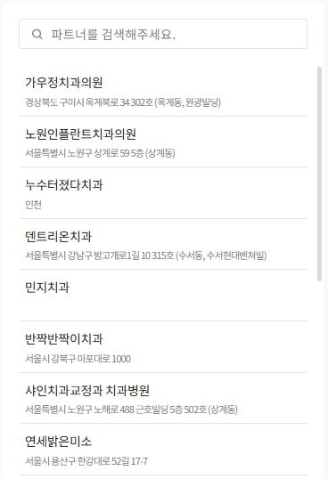
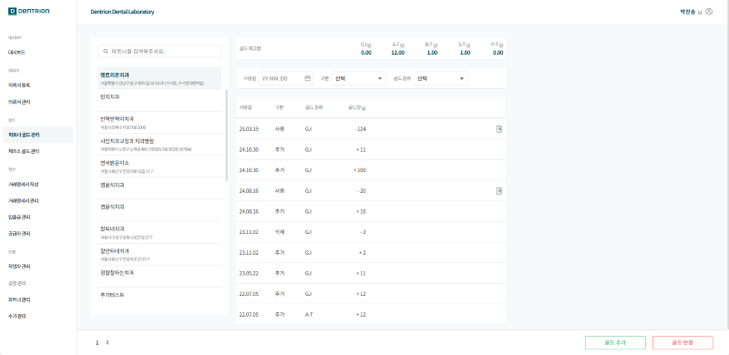
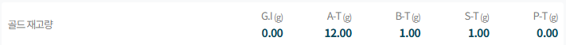
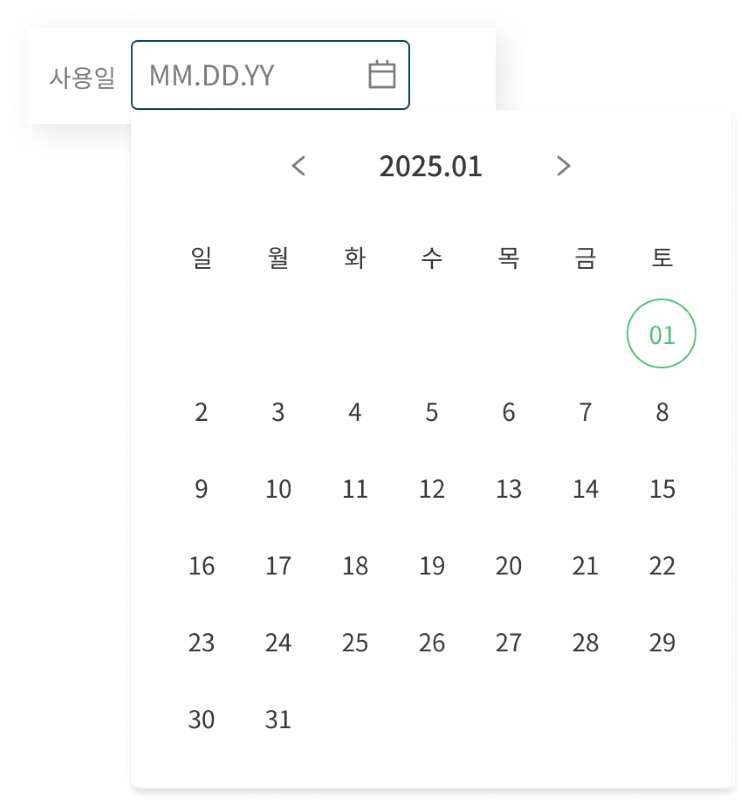
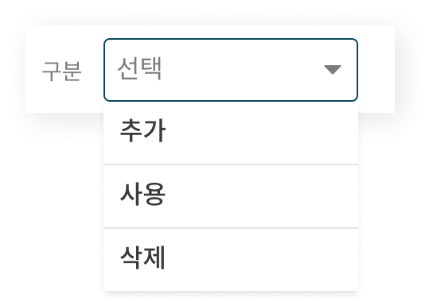
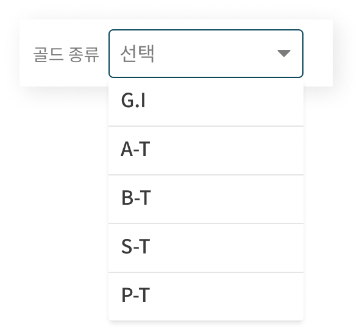
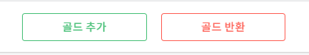
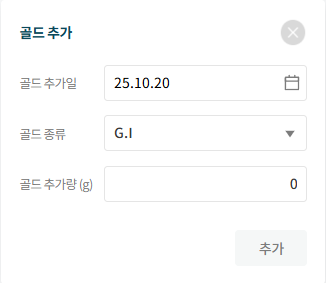
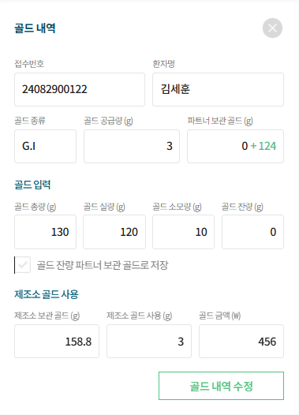

1.골드 관리
이 화면에서는 파트너가 보관 중인 골드 재고를 확인할 수 있으며 골드 추가, 반환 내역을 실시간으로 조회할 수 있습니다.
1-1.파트너 골드 관리

1-1-1. 목록
파트너 검색 및 목록을 확인할 수 있습니다.

1-1-2.골드 내역
파트너 클릭 시 파트너 별로 사용일, 항목 구분, 골드 종류별 내역을 세분화하여 확인할 수 있습니다.

1. 사용일 : 골드 내역은 발생한 날짜 기준으로 내림차순으로 정렬됩니다.
2. 구분 : 골드 내역은 사용 / 추가 / 삭제로 구분됩니다.
3. 골드 종류 : G.I / A-T / B-T / S-T / P-T 중 발생한 골드 종류가 표시됩니다.
4. 골드량 : 사용, 추가, 삭제된 골드량을 g단위로 표시됩니다.
5. 상세보기 : 보철물 제작 시 사용된 골드의 상세 내역을 확인할 수 있습니다
1-1-3.골드 재고량
제조소에서 보관 중인 파트너 골드 재고를 타입별로 확인할 수 있습니다.
[골드 항목]
G.I / A-T / B-T / S-T / P-T

1-1-4.내역 조회 필터
상세 검색으로 원하는 골드 내역을 조건별로 조회할 수 있습니다.
[사용일] : 6자리 형식(MM.DD.YY)으로 직접 입력하거나, 캘린더를 이용해 원하는 날짜를 선택해 조회할 수 있습니다.

[구분] : 골드 사용 / 추가 / 삭제를 구분하여 원하는 항목만 선택해 조회할 수 있습니다.

[골드 종류] : G.I / A-T / B-T / S-T / P-T 종류 중 원하는 항목만 선택해 조회할 수 있습니다.

1-1-5.골드 추가/반환
파트너별로 골드량을 추가 또는 반환할 수 있습니다.
모든 입력값을 입력 시 [추가] 또는 [반환] 버튼이 활성화 됩니다.

[골드 추가]

1. 골드 반환일 : 골드 반환한 일자를 선택할 수 있습니다.
2. 골드 종류 : 추가할 골드 종류를 선택할 수 있습니다.
3. 골드 반환량(g) : 반환할 골드량(g)을 입력할 수 있습니다.
1-1-6.골드 상세 내역
보철물 제작 과정에서 사용된 골드 종류 및 사용량에 대한 상세 정보를 확인할 수 있습니다.

1. 환자 정보 : 골드를 사용한 의뢰의 접수 번호와 환자명을 확인할 수 있습니다.
2. 제공된 골드 : 해당 보철물 의뢰서와 함께 제공한 골드 종류와 공급량을 확인할 수 있습니다.
3. 파트너 보관 골드 : 파트너가 사전에 제공하여 제조소에서 보관 중인 골드량을 확인할 수 있습니다.
4. 골드 입력 : 보철물 제작 시 제조소에서 입력한 사용량을 확인할 수 있습니다.
5. 보관 골드 저장 : 보철물 제작 후 남은 골드를 보철물과 함께 반환하지 않고 제조소에서 보관한 경우 선택됩니다.
6. 제조소 골드 사용 : 제공 또는 보관된 골드가 없는 경우 제조소가 선 제작 후 청구한 골드 정보입니다.
7. 골드 내역 수정 : 골드 사용 내역을 수정할 수 있습니다.
※골드 총량 = 실량 + 잔량 + 소모량※
※골드 실량 : 제작된 보철물의 중량※
※골드 소모량 : 보철물 제작시 소모된 골드량※
※골드 잔량 : 보철물을 제작하고 남은 잔여 골드량